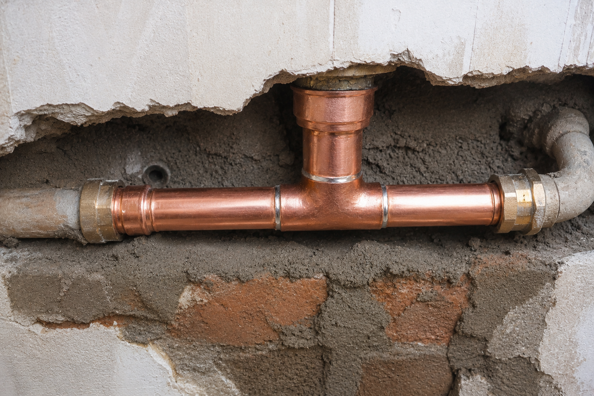
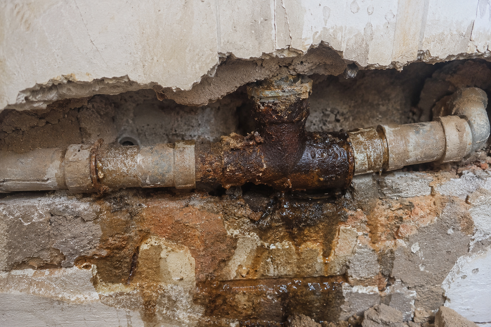
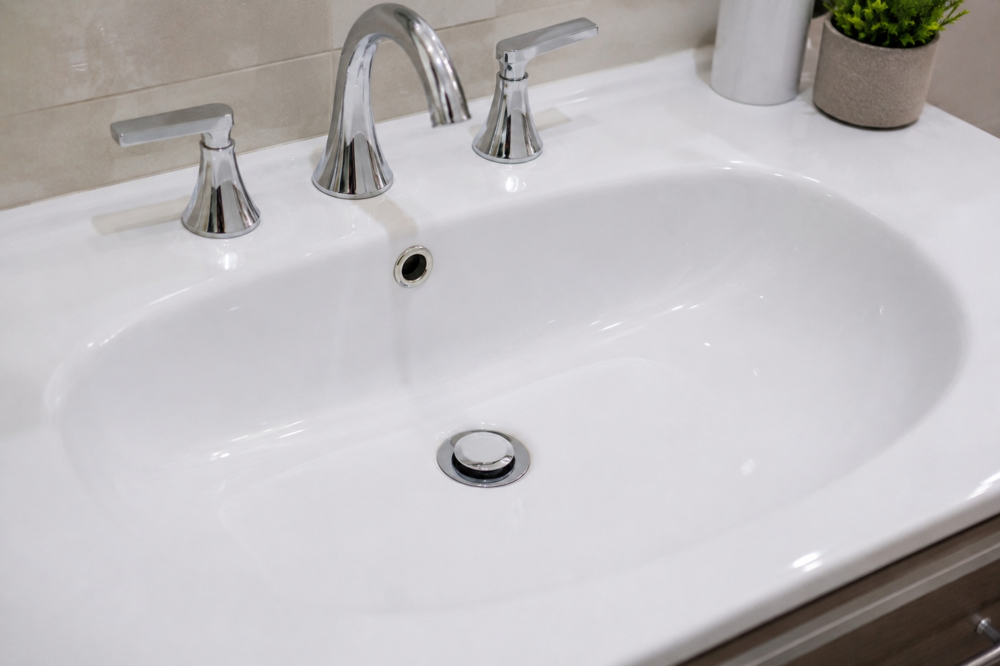
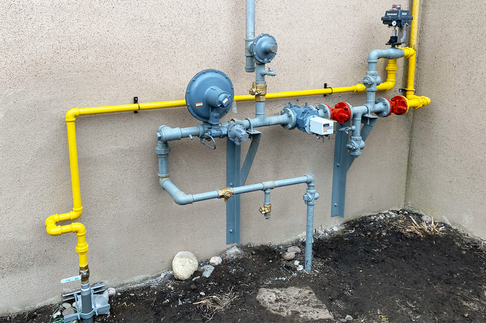

Pérdidas y griferías
Canillas, llaves de paso, flexibles y conexiones que gotean o no cierran bien.
Consultar reparación
Demo conceptual · servicio de plomería
Reparaciones, desagües e instalaciones con una conversación clara desde el primer mensaje: qué pasa, qué hay que revisar y qué se puede hacer.
Esta página es una demostración de diseño. El contacto y los datos del profesional se reemplazan antes de publicar.
Primero, entender el agua
Una canilla que pierde, un desagüe lento o una humedad visible pueden tener causas distintas. La consulta inicial ayuda a ordenar síntomas, ubicación y urgencia sin prometer un diagnóstico a distancia.
El alcance, los materiales y las condiciones se confirman con el profesional antes de avanzar. Así la decisión se toma con mejor información.
Un recorrido sin vueltas
Describí la pérdida, el ruido, el olor, el atasco o la instalación que querés resolver.
Fotos, ubicación y estado visible ayudan a entender qué conviene observar en el lugar.
El profesional confirma tarea, materiales, tiempos y condiciones antes de empezar.
Elegí por necesidad
Un mapa simple para describir mejor tu consulta, sin esconder el trabajo detrás de palabras genéricas.
Canillas, llaves de paso, flexibles y conexiones que gotean o no cierran bien.
Consultar reparaciónCocina, baño y lavadero: cuando el agua baja lento, vuelve o directamente no drena.
Describir el atascoRoturas, filtraciones y señales visibles que necesitan revisión de la instalación.
Contar el casoTermotanques, lavarropas, artefactos y conexiones para una puesta en marcha ordenada.
Consultar instalaciónEl oficio se ve en los detalles
Imágenes ilustrativas del rubro. No representan trabajos realizados por un negocio específico ni prueban resultados comerciales.



Antes de coordinar
Esta demo no afirma una cobertura geográfica. En una versión publicada, el profesional definiría las localidades y condiciones de atención antes de recibir consultas.
Antes de consultar
La respuesta concreta depende del estado real de la instalación y del alcance acordado.
Contá qué ocurre, desde cuándo, en qué ambiente y si podés seguir usando la instalación. Las fotos también pueden aportar contexto.
No necesariamente. Puede haber más de una causa; por eso conviene revisar el origen antes de definir una reparación.
Esta demo no publica precios. El valor depende del diagnóstico, los materiales y el alcance que confirme el profesional.
La disponibilidad y el alcance de atención deben confirmarse con el profesional. Esta página no promete horarios ni tiempos de llegada.
Siguiente paso
Dejanos contexto para que la consulta sea más útil. Este formulario es demostrativo y no envía datos a un negocio real.